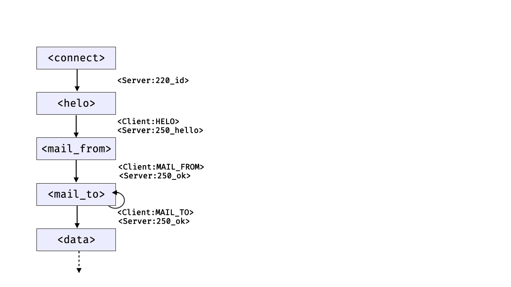
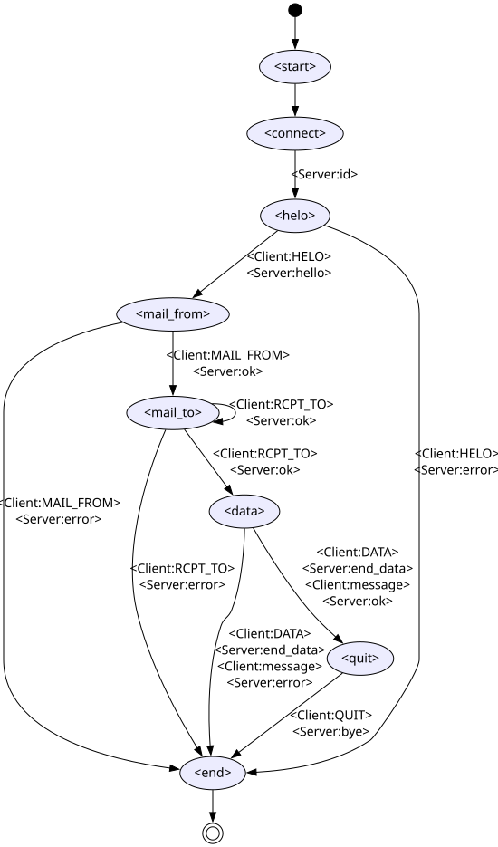

Testing Protocols#
{kind=link}
In the chapter on checking outputs, we already have seen how to interact with external programs. In this chapter, we will extend this concept to full protocol testing across networks.
Fandango can test protocols. In particular, it can
act as a network client and interact with network servers; and
act as a network server and interact with network clients.
Interacting with an SMTP server#
Let us start with a simple example.
The Simple Mail Transfer Protocol (SMTP, RFC 821) is a protocol through which mail clients can connect to a server to send mail to recipients.
A typical interaction with an SMTP server smtp.example.com, sending a mail from bob@example.org to alice@example.com, is illustrated below:
sequenceDiagram
SMTP Client->>SMTP Server: (connect)
SMTP Server->>SMTP Client: 220 smtp.example.com ESMTP Postfix
SMTP Client->>SMTP Server: HELO relay.example.org
SMTP Server->>SMTP Client: 250 Hello relay.example.org, glad to meet you
SMTP Client->>SMTP Server: MAIL FROM:<bob@example.org>
SMTP Server->>SMTP Client: 250 Ok
SMTP Client->>SMTP Server: RCPT TO:<alice@example.com>
SMTP Server->>SMTP Client: 250 Ok
SMTP Client->>SMTP Server: DATA
SMTP Server->>SMTP Client: 354 End data with <CR><LF>.<CR><LF>
SMTP Client->>SMTP Server: From: "Bob Example" <bob@example.org>
SMTP Client->>SMTP Server: To: "Alice Example" <alice@example.com>
SMTP Client->>SMTP Server: Subject: Protocol Testing with I/O Grammars
SMTP Client->>SMTP Server: (mail body)
SMTP Client->>SMTP Server: .
SMTP Server->>SMTP Client: 250 Ok: queued as 12345
SMTP Client->>SMTP Server: QUIT
SMTP Server->>SMTP Client: 221 Bye
SMTP Server->>SMTP Client: (closes the connection)
Our job will be to automate this interaction using Fandango. For this, we need two things:
An SMTP server to send commands to
A
.fanspec that encodes this interaction.
An SMTP server for experiments#
For illustrating protocol testing, we need to run an SMTP server, which we will run locally on our machine. (No worries - the local SMTP server can not actually send mails across the Internet.)
The Python aiosmtpd server will do the trick:
$ pip install aiosmtpd
Once installed, we can run the server locally. Normally, it runs on port 8025:
$ python -m aiosmtpd -d -n &
We can now connect to the server on the given port and send it commands.
The telnet command is handy for this.
We give it a hostname (localhost for our local machine) and a port (8025 for our local SMTP server.)
Once connected, anything we type into the telnet input will automatically be relayed to the given port, and hence to the SMTP server.
For instance, entering a QUIT command (followed by Return) into telnet will be forwarded to the SMTP server, which will terminate the connection:
$ telnet localhost 8025
Trying localhost...
Connected to localhost.
Escape character is '^]'.
220 smtp.example.com.zrmaal2pbohupgkitq0opsvvsh.ex.internal.cloudapp.net Python SMTP 1.4.6
QUIT
221 Bye
Connection closed by foreign host.
Try this for yourself!
What happens if you invoke telnet, introducing yourself with HELO client.example.org?
Solution
When sending HELO client.example.org, the server replies with its own hostname.
This is the name of the local computer, in our example smtp.example.com.
$ telnet localhost 8025
Trying localhost...
Connected to localhost.
Escape character is '^]'.
220 smtp.example.com Python SMTP 1.4.6
HELO client.example.org
250 smtp.example.com
QUIT
221 Bye
Connection closed by foreign host.
Tip
To interrupt a telnet session, type the escape character (CTRL + ]).
At the telnet> prompt, enter help for possible commands;
quit exits the telnet program.
A simple SMTP grammar#
With fandango talk, we have seen a Fandango facility that allows us to connect to the standard input and output channels of a given program and interact with it.
The idea would now be to use the telnet program for this very purpose.
By invoking
$ fandango talk -f smtp-telnet.fan telnet localhost 8025
we could interact with the telnet program as described above.
All we now need is a grammar that describes the telnet interaction.
The following grammar has two parts:
First, we expect some output from the
telnetprogram.Then, we interact with the SMTP server - just sending a
QUITcommand and then exiting.
A typical interaction thus would be:
sequenceDiagram
Fandango->>telnet: (invoke)
telnet->>Fandango: Trying ::1...
telnet->>Fandango: Connected to localhost.
telnet->>Fandango: Escape character is '^]'.
SMTP Server (via telnet)->>Fandango: 220 smtp.example.com Python SMTP 1.4.6
Fandango->>SMTP Server (via telnet): QUIT
SMTP Server (via telnet)->>Fandango: 221 Bye
SMTP Server (via telnet)->>telnet: (closes connection)
telnet->>Fandango: (ends execution)
The following I/O grammar smtp-telnet.fan implements this interaction via telnet:
First,
<telnet-intro>lets Fandango expect thetelnetintroduction;Then,
<smtp>takes care of the actual SMTP interaction.
<start> ::= <Out:telnet_intro> <smtp>
<telnet_intro> ::= \
r"Trying.*" "\n" \
r"Connected.*" "\n" \
r"Escape.*" "\n"
<smtp> ::= <Out:m220> <In:quit> <Out:m221>
<m220> ::= "220 " r".*" "\n"
<quit> ::= "QUIT\n"
<m221> ::= "221 " r".*" "\n"
Note
Again, note that In and Out describe the interaction from the perspective of the program under test; hence, Out is what telnet and the SMTP server produce, whereas In is what the SMTP server (and telnet) get as input.
With this, we can now connect to our (hopefully still running) SMTP server and actually send it a QUIT command:
$ fandango talk -f smtp-telnet.fan -n 1 telnet localhost 8025
fandango:WARNING: Could not generate a full population of unique individuals. Population size reduced to 1.
To track the data that is actually exchanged, use the verbose -v flag.
The In: and Out: log messages show the data that is being exchanged.
$ fandango -v talk -f smtp-telnet.fan -n 1 telnet localhost 8025
fandango:INFO: ---------- Parsing FANDANGO content ----------
fandango:INFO: Setting command ['telnet', 'localhost', '8025']
fandango:INFO: Starting subprocess with command ['telnet', 'localhost', '8025']
fandango:INFO: File mode: text
fandango:INFO: ---------- Initializing base population ----------
fandango:INFO: ---------- Initializing FANDANGO algorithm ----------
fandango:INFO: ---------- Done initializing base population ----------
fandango:INFO: ---------- Generating for 500 generations----------
fandango:INFO: Generating (additional) initial population (size: 100)...
fandango:WARNING: Could not generate a full population of unique individuals. Population size reduced to 1.
fandango:INFO: Initial population generated in 0.05 seconds
fandango:INFO: Current coverage: 1.96%
fandango:INFO: Out: <telnet_intro> "Trying ::1...\nConnected to localhost.\nEscape character is '^]'.\n"
fandango:INFO: Current coverage: 29.41%
fandango:INFO: Out: <m220> '220 runnervm35a4x.zrmaal2pbohupgkitq0opsvvsh.ex.internal.cloudapp.net Python SMTP 1.4.6\n'
fandango:INFO: Current coverage: 60.78%
fandango:INFO: In: <quit> 'QUIT\n'
fandango:INFO: Current coverage: 74.51%
fandango:INFO: Out: <m221> '221 Bye\n'
fandango:INFO: Current coverage: 100.00%
Changed in version 1.1: As of version 1.1, Fandango by default
keeps on generating interactions until stopped (or limited by the
-noption)aims for grammar coverage, thus covering states and message alternatives
Interacting as Network Client#
Using telnet to communicate with servers generally works, but it has a number of drawbacks.
Most importantly, telnet is meant for human interaction.
Hence, our I/O grammars have to reflect the telnet output (which actually might change depending on operating system and configuration); also, telnet is not suited for transmitting binary data.
Fortunately, Fandango offers a means to be invoked directly as a network client, not requiring external programs such as telnet.
The fandango talk option --client allows Fandango to be used as a network client.
The argument to --client is a network address to connect to.
In the simplest form, it is just a port number on the local machine.
Hence, to have Fandango act as an SMTP client for the local server, we would use
the option --client 8025.
Since Fandango directly talks to the SMTP server now, we can also simplify the grammar by removing the <telnet_intro> part.
Also, there is no more In and Out parties, since we do not interact with the standard input and output of an invoked program.
Instead,
Clientis the party representing the client, connecting to an external server on the network.Serveris the party representing a server on the network, accepting connections from clients.
Consequently,
all outputs produced by the client (and processed by the server) are prefixed with
Client:in the respective nonterminals; andall outputs produced by the server (and processed by the client) are prefixed with
Server:.
With this, we can reframe and simplify our SMTP grammar, using Client and Server to describe the respective interactions.
The spec smtp-simple.fan reads as follows:
<start> ::= <smtp>
<smtp> ::= <Server:m220> <Client:quit> <Server:m221>
<m220> ::= "220 " <hostname> " " r".*" "\r\n"
<quit> ::= "QUIT\r\n"
<m221> ::= "221 " r".*" "\r\n"
<hostname> ::= r"[-a-zA-Z0-9.:]*" := "host.example.com"
Note how we added <hostname> as additional specification of the hostname that is typically part of the initial server message.
With this, we have Fandango act as client and connect to the (hopefully still running) server on port 8025:
$ fandango talk -f smtp-simple.fan -n 1 --client 8025
fandango:WARNING: Could not generate a full population of unique individuals. Population size reduced to 1.
sequenceDiagram
Fandango->>SMTP Server: (connect)
SMTP Server->>Fandango: 220 smtp.example.com <more data>
Fandango->>SMTP Server: QUIT
SMTP Server->>Fandango: 221 <more data>
SMTP Server->>Fandango: (closes connection)
From here on, we can have Fandango directly “talk” to network components such as servers.
Interacting as Network Server#
Obviously, our SMTP specification is still very limited.
Before we go and extend it, let us first highlight a particular Fandango feature.
From the same specification, Fandango can act as a client and as a server.
When invoked with the --server option, Fandango will create a server at the given port and accept client connections.
So if we invoke
$ fandango talk -f smtp-simple.fan -n 100 --server 8125
fandango:WARNING: Fandango IO only supports desired-solution values of 1 for now, overriding value
fandango:WARNING: Could not generate a full population of unique individuals. Population size reduced to 1.
we can then connect to our running Fandango “SMTP Server” and interact with it according to the smtp-simple.fan spec:
$ telnet localhost 8125
Trying localhost...
Connected to localhost.
Escape character is '^]'.
220 host.example.com 8*DmR1`
QUIT
221 5jybIoU%(n0V nr]
Connection closed by foreign host.
Note that as server, Fandango produces its own 220 and 221 messages, effectively fuzzing the client.
Note how the interaction diagram reflects how Fandango is now taking the role of the client:
sequenceDiagram
SMTP Client (or telnet)->>Fandango: (connect)
Fandango->>SMTP Client (or telnet): 220 smtp.example.com <random data>
SMTP Client (or telnet)->>Fandango: QUIT
Fandango->>SMTP Client (or telnet): 221 <random data>
Fandango->>SMTP Client (or telnet): (closes connection)
A Bigger Protocol Spec#
So far, our SMTP server is not great at testing SMTP clients – all it can handle is a single QUIT command.
Let us extend it a bit with a few more commands, reflecting the interaction in the introduction:
<start> ::= <connect>
<connect> ::= <Server:id> <helo>
<id> ::= '220 ' <hostname> ' ESMTP Postfix\r\n'
<hostname> ::= r"[-a-zA-Z0-9.:]+" := "host.example.com"
<helo> ::= <Client:HELO> \
(<Server:hello> <mail_from> | <Server:error> <end>)
<HELO> ::= 'HELO ' <hostname> '\r\n'
<hello> ::= '250 Hello ' <hostname> ', glad to meet you\r\n'
<error> ::= '5' <digit> <digit> ' ' <error_message> '\r\n'
<error_message> ::= r'[^\r]*' := "Error"
<mail_from> ::= <Client:MAIL_FROM> \
(<Server:ok> <mail_to> | <Server:error> <end>)
<MAIL_FROM> ::= 'MAIL FROM:<' <email> '>\r\n'
# Actual email addresses are much more varied
<email> ::= r"[-a-zA-Z0-9.]+" '@' <hostname> := "alice@example.com"
<ok> ::= '250 Ok\r\n'
<mail_to> ::= <Client:RCPT_TO> \
(<Server:ok> <data> | <Server:ok> <mail_to> | <Server:error> <end>)
<RCPT_TO> ::= 'RCPT TO:<' <email> '>\r\n'
<data> ::= <Client:DATA> <Server:end_data> <Client:message> \
(<Server:ok> <quit> | <Server:error> <end>)
<DATA> ::= 'DATA\r\n'
<end_data> ::= '354 End data with <CR><LF>.<CR><LF>\r\n'
<message> ::= r'[^.\r\n]*\r\n[.]\r\n'
<quit> ::= <Client:QUIT> <Server:bye> <end>
<QUIT> ::= 'QUIT\r\n'
<bye> ::= '221 Bye\r\n'
<end> ::= ''
This spec can actually handle the initial interaction (check it!).
From State Diagrams to Grammars#
In the extended SMTP spec, you may note that the interactions follow a particular order, implying the state the server and client are in. In the “happy” path (assuming no errors), the order of possible states and interactions can be visualized as a state diagram:
stateDiagram
[*] --> #lt;connect#gt;
#lt;connect#gt; --> #lt;helo#gt;: #lt;Server#colon;id#gt;
#lt;helo#gt; --> #lt;mail_from#gt;: #lt;Client#colon;HELO#gt; #lt;Server#colon;hello#gt;
#lt;mail_from#gt; --> #lt;mail_to#gt;: #lt;Client#colon;MAIL_FROM#gt; #lt;Server#colon;ok#gt;
#lt;mail_to#gt; --> #lt;data#gt;: #lt;Client#colon;RCPT_TO#gt; #lt;Server#colon;ok#gt;
#lt;mail_to#gt; --> #lt;mail_to#gt;: #lt;Client#colon;RCPT_TO#gt; #lt;Server#colon;ok#gt;
#lt;data#gt; --> #lt;quit#gt;: #lt;Client#colon;DATA#gt; #lt;Server#colon;end_data#gt; #lt;Client#colon;message#gt;
#lt;quit#gt; --> [*]: #lt;Client#colon;QUIT#gt; #lt;Server#colon;bye#gt;
In this state diagram,
every rounded rectangle stands for a state;
arrows denote possible transitions between these states;
labels on the transitions denote the interactions that take place when transitioning from one state to another; and
any path through the state diagram indicates a valid sequence of states (and hence a valid sequence of interactions).
State diagrams often contain loops.
Both the SMTP grammar (and the above state diagram) accepts multiple <mail_to> interactions, allowing mails to be sent to multiple destinations.
Note how the set of paths through the state diagram corresponds to the possible sequence of productions in the SMTP specification. Both the state diagram and the grammar effectively specify the same sequence of interactions; the grammar on top also specifies the syntax of individual messages.
Note
In Fandango, you can apply constraints to all nonterminals, whether they stand for states, interactions, messages, or parts thereof.
Converting State Diagrams to Grammars#
Often, a protocol specification is already given in the form of such a state diagram, also known as a labeled transition system (LTS) or as a finite state automaton (FSA). You can convert these into Fandango grammars as follows:
Every state \(S\) in the diagram becomes a nonterminal \(S\) in the grammar.
Every transition \(A \rightarrow B\) in the diagram becomes an expansion of \(A\) into \(B\), or \(A ::= B\).
If there are multiple alternatives outgoing from \(A\), each of them becomes a separate alternative for the expansion of \(A\).
The animation below illustrates how this conversion works applied on the first states of the SMTP protocol.

Note
Apply these rules to the SMTP state diagram, above, and check how they correspond to the Fandango SMTP spec.
Modeling Errors#
Our SMTP spec above actually accounts for errors, always having the server enter an <error> state if the client command received cannot be parsed properly.
Hence, the state diagram induced by the above grammar actually looks like this:
stateDiagram
[*] --> #lt;start#gt;
#lt;start#gt; --> #lt;connect#gt;
#lt;connect#gt; --> #lt;helo#gt;: #lt;Server#colon;id#gt;
#lt;helo#gt; --> #lt;mail_from#gt;: #lt;Client#colon;HELO#gt; #lt;Server#colon;hello#gt;
#lt;helo#gt; --> #lt;end#gt;: #lt;Client#colon;HELO#gt; #lt;Server#colon;error#gt;
#lt;mail_from#gt; --> #lt;mail_to#gt;: #lt;Client#colon;MAIL_FROM#gt; #lt;Server#colon;ok#gt;
#lt;mail_from#gt; --> #lt;end#gt;: #lt;Client#colon;MAIL_FROM#gt; #lt;Server#colon;error#gt;
#lt;mail_to#gt; --> #lt;data#gt;: #lt;Client#colon;RCPT_TO#gt; #lt;Server#colon;ok#gt;
#lt;mail_to#gt; --> #lt;mail_to#gt;: #lt;Client#colon;RCPT_TO#gt; #lt;Server#colon;ok#gt;
#lt;mail_to#gt; --> #lt;end#gt;: #lt;Client#colon;RCPT_TO#gt; #lt;Server#colon;error#gt;
#lt;data#gt; --> #lt;quit#gt;: #lt;Client#colon;DATA#gt; #lt;Server#colon;end_data#gt; #lt;Client#colon;message#gt; #lt;Server#colon;ok#gt;
#lt;data#gt; --> #lt;end#gt;: #lt;Client#colon;DATA#gt; #lt;Server#colon;end_data#gt; #lt;Client#colon;message#gt; #lt;Server#colon;error#gt;
#lt;quit#gt; --> #lt;end#gt;: #lt;Client#colon;QUIT#gt; #lt;Server#colon;bye#gt;
#lt;end#gt; --> [*]
Having such <error> transitions as part of the spec allows Fandango to also cover and trigger these.
Extracting State Diagrams#
You can use Fandango to automatically extract state diagrams such as the above. Such a visualization can be helpful for debugging.
fandango convert --to=mermaidproduces input for the Mermaid visualizer.fandango convert --to=dotproduces an input in DOT format for the Graphviz visualizer.fandango convert --to=stateproduces a generic textual representation.
This assumes the grammar actually embeds a state diagram - the last nonterminal in each expansion is supposed to be a new state, and the nonterminals next to last will become part of the transition.
Visualizing State Diagrams with Mermaid#
To produce the above state diagram for SMTP as an SVG file smtp-mermaid.svg,
use the Mermaid mmdc command-line interface:
{kind=link}
$ fandango convert --to=mermaid smtp-extended.fan | mmdc -i - -o smtp-mermaid.svg
The resulting SVG image is the same as embedded above:

Visualizing State Diagrams with Graphviz (DOT)#
To produce a similar SVG file smtp-dot.svg using Graphviz,
use the dot command-line interface:
{kind=link}
$ fandango convert --to=dot smtp-extended.fan | dot -T svg -o smtp-dot.svg
This is the resulting SVG image:

Which one is nicer? Pick your favorite.
Extracting State Diagrams as Plain Text#
If you want to read or further process the diagram, a simple textual representation is available as well:
$ fandango convert --to=state smtp-extended.fan
# Automatically generated from 'smtp-extended.fan'.
# Format: STATE_1 --> STATE_2: [ACTIONS]; `[*]` is a start/end state
#
[*] --> <start>
<start> --> <connect>
<connect> --> <helo>: <Server:id>
<helo> --> <mail_from>: <Client:HELO> <Server:hello>
<helo> --> <end>: <Client:HELO> <Server:error>
<end> --> [*]
<mail_from> --> <mail_to>: <Client:MAIL_FROM> <Server:ok>
<mail_from> --> <end>: <Client:MAIL_FROM> <Server:error>
<mail_to> --> <data>: <Client:RCPT_TO> <Server:ok>
<mail_to> --> <mail_to>: <Client:RCPT_TO> <Server:ok>
<mail_to> --> <end>: <Client:RCPT_TO> <Server:error>
<data> --> <quit>: <Client:DATA> <Server:end_data> <Client:message> <Server:ok>
<data> --> <end>: <Client:DATA> <Server:end_data> <Client:message> <Server:error>
<quit> --> <end>: <Client:QUIT> <Server:bye>
Simulating Individual Parties#
As described in the chapter on checking outputs, we can use the fuzz command to actually show generated outputs of individual parties:
$ fandango fuzz --party=Client -f smtp-extended.fan -n 1
HELO host.example.com
$ fandango fuzz --party=Server -f smtp-extended.fan -n 1
220 host.example.com ESMTP Postfix
597 Error
That’s it for now. GO and thoroughly test your programs!